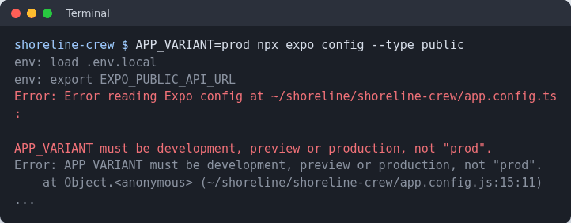

⚙️ Lesson 9.1: App Config and Environments
Until now Shoreline Crew has lived inside Expo Go, which brings its own name, icon and permissions. Shipping means your app carries its own: a name under the icon, an id the stores know it by, the sentences the phone shows when it asks for the camera, the colors of the splash screen. Today all of that moves into one typed file, app.config.ts, and one project learns to become three apps: one for you to develop, one for testers, one for volunteers.
🎯 Learning Objectives
By the end of this lesson, you will be able to:
- Explain what the app config controls, who reads it (Expo Go, prebuild, your build) and how to see exactly what Expo sees with
npx expo config - Replace
app.jsonwith a typedapp.config.tsand say what you gain and what tools can no longer do for you - Define development, preview and production variants with their own names and app ids, chosen by
APP_VARIANT - Decide where each setting lives (
EXPO_PUBLIC_variables, the shell,.env.local, a build service's secrets) and keep secrets out of your code - Explain why release builds refuse plain
http, what that means for shoreline-api, and what a real app does instead - Audit what a build asks the phone for: permission sentences, Face ID, push entitlement, notification icon and splash screen
📦 Code for this lesson
Starting code: lesson-32-start.zip · Finished code: lesson-32-end.zip. Each folder has a README with the commands to run it.
In This Lesson
👋 Welcome: From a Project to an App
At the end of Lesson 8.4 you read every key in app.json. Most of them did nothing you could see: Expo Go showed its own icon, asked for the camera in its own words, and never needed an id for Shoreline Crew. That changes the moment you build your own app (Lesson 9.2). The phone, the stores and Google's and Apple's services all read what this file says.
This lesson is the bridge. By the end of it:
- The config is code:
app.config.ts, type-checked like the rest of the app, replacesapp.json. - One project makes three apps: Shoreline Dev for you, Shoreline Preview for crew leaders who test, Shoreline Crew for volunteers, each with its own name and id so all three fit on one phone.
- Settings and secrets have a home: the API address per variant, and a Google Maps key that never enters your code.
- The debts from earlier lessons are paid: plain
httpin release builds (5.1), the Maps key (6.3), the push entitlement (6.4), permission sentences (6.1, 6.2) and the Face ID sentence nobody needs (6.1's Exercise 2), plus the iPhone icon question Lesson 2.3 left open.
Why it matters for your work: on a real team, "which build is this?" is the first question of every bug report, and the most expensive mistakes in mobile are configuration mistakes: a test build that overwrote the store app on a manager's phone, an API key pushed to a public repository, a store rejection for a permission sentence that says "Allow $(PRODUCT_NAME) to access your Face ID biometric data" in an app with no Face ID. Each of those is one line in the file you write today.
🌱 Config errors are the friendly kind
Today you will break the config on purpose, and every break stops Expo at once with a message that names the file and the problem. That is the best kind of error: loud, early, on your computer, before a volunteer ever sees it. If a command fails, read the first Error: line; it is almost always enough.
🗂️ What the App Config Is, and Who Reads It
The app config describes the app around your JavaScript: its name and version, its icon and splash screen, its deep-link scheme (Lesson 4.4), its ids, and the config plugins that write native settings such as permission sentences. Expo reads it whenever it runs, and different readers use different parts:
| Reader | What it uses | When |
|---|---|---|
| Expo CLI and Metro | Everything, to start or export the app; the web preview gets a small web-only part (name, favicon, colors) | npx expo start, npx expo export |
| Expo Go | The public config Metro sends: name, version, scheme, and what your code reads with expo-constants. Not your icon, ids or permission sentences: Expo Go is already installed with its own | Every time you open the project |
| Prebuild | Everything, to write the native projects (android/, ios/): ids, icons, splash, permissions, entitlements | Each build (Lesson 9.2), or npx expo prebuild |
| Your build | The native projects, plus a copy of the public config inside the app, which Constants.expoConfig reads | On the phone, after install |
Two consequences follow from this picture, and the rest of the lesson builds on them:
- The config runs on your computer, never on the phone. It is evaluated by Node (and, from Lesson 9.2, on the build server). It can read environment variables and do arithmetic; it cannot import your React Native components.
- The public config travels with the app. Anything in it, including a config plugin's options, ends up in Expo Go's copy of your project and inside every build, where anyone holding the app file can read it. Keep that in mind when a key comes along.
You never have to guess what Expo sees: npx expo config prints the evaluated config. --type public prints what travels with the app; --type introspect runs the config plugins in memory and prints the native settings they would write, without creating any folders (Lesson 6.1 used it for permission sentences).
💡 Mental model: the field kit's label
Lesson 1.1 called the native modules a build carries its field kit. The app config is the label stitched on the bag: whose kit it is, which crew, what is inside, what it is allowed to carry through security. Expo Go is a borrowed bag with Expo's label already on it, which is why nothing you wrote on yours showed up so far. Today you write the label for three bags, one per crew: practice, testing, and the real cleanup.
📄 app.json or app.config.ts
Expo accepts the config in two forms. app.json is static JSON, the form the template gave you. app.config.ts (or .js) is a function Expo runs; it returns the same object. When both exist, Expo reads app.json first and passes it to the function as config, so a small app.config.ts can adjust a big app.json. Shoreline Crew moves everything into app.config.ts and deletes app.json, so there is one file to read.
app.json | app.config.ts | |
|---|---|---|
| Values per variant | No: one fixed set | Yes: code chooses |
| Reads the environment | No | Yes: process.env, including .env.local |
| Typos caught | No: an unknown key is silently ignored | Yes: npx tsc --noEmit checks it against Expo's ExpoConfig type |
| Comments | No | Yes: explain why a setting is there |
| Tools can edit it | Yes: npx expo install adds config plugins for you | No: tools print what to add, and you add it |
The last row is the price, and it is a small one: when a package needs a plugin entry, npx expo install tells you exactly what to paste (Common Mistakes shows the message). In return, the config gets types, comments and logic. Expo compiles the TypeScript file itself; you will see it called app.config.js in stack traces.
The function receives a ConfigContext and returns an ExpoConfig, both types from expo/config. The smallest useful one, wrapping an existing app.json, looks like this:
import type { ConfigContext, ExpoConfig } from 'expo/config';
// For a first look: Expo reads app.json, then hands it to this function as `config`
export default ({ config }: ConfigContext): ExpoConfig => ({
...config,
name: 'Shoreline Dev',
slug: 'shoreline-crew',
});...config keeps everything app.json said; the two keys after it win. ExpoConfig insists on a name and a slug, so a wrapper sets both. You try exactly this in Step 2, then move everything in.
🧪 Three Variants of One App
A team rarely has one copy of its app on a phone. Shoreline Crew will have three, built from the same code:
| Variant | Name under the icon | App id (iOS bundle identifier and Android package) | Who has it | What kind of build |
|---|---|---|---|---|
| development | Shoreline Dev | com.example.shorelinecrew.dev | You, while coding | A development build: loads JavaScript from Metro, like Expo Go (Lesson 9.2) |
| preview | Shoreline Preview | com.example.shorelinecrew.preview | Crew leaders who test before a release | A release build with the JavaScript inside, installed directly, not from a store |
| production | Shoreline Crew | com.example.shorelinecrew | Volunteers | A release build from the App Store and Google Play (Lesson 9.4) |
The app id is how a phone and a store tell apps apart. Install a build with an id the phone already has, and it replaces that app, data and all. With three ids, the three variants sit side by side, and the preview a crew leader installs never wipes the production app holding their offline logs (Lesson 5.5). Rules worth knowing before you choose yours:
- Ids are written as a reversed domain name you control, plus the app:
com.yourname.shorelinecrew. Letters, digits and dots are safe on both platforms (Android also allows underscores, iOS hyphens; use neither). - The production id is permanent once the app is in a store: a different id is a different app, with no reviews and no users.
- The course uses
com.examplebecauseexample.comis reserved for examples. Google Play refuses package names that start withcom.example, so before Lesson 9.4, replace it with a domain or name of your own. - Names under icons get cut off when long (how many letters fit depends on the phone and its text size): keep the word that tells variants apart near the start.
One environment variable picks the variant: APP_VARIANT. Nothing set means development, so npx expo start keeps working as before, and a build that forgot to say which variant it is gets a .dev id: it can never overwrite the real app by accident. In Lesson 9.2, each build profile in eas.json sets APP_VARIANT for its builds. Today you set it in front of a command:
APP_VARIANT=preview npx expo config --type publicThat form works in macOS and Linux terminals and in WSL. In Windows PowerShell, set the variable first and remove it afterwards, as in Lesson 8.4:
$env:APP_VARIANT = "preview"
npx expo config --type public
Remove-Item Env:APP_VARIANT💡 Mental model: three bags, three labels
The practice kit, the testers' kit and the volunteers' kit hold the same tools, packed the same way. Only the label differs, and the label is what keeps the practice gloves out of the volunteers' bag. APP_VARIANT is the label maker: one setting, read once, and every other difference follows from it.
🔑 Settings, Environments and Secrets
Shoreline Crew now has three kinds of settings that change from place to place, and each has a different home:
| Setting | Read by | Lives in | Secret? |
|---|---|---|---|
EXPO_PUBLIC_API_URL (Lesson 5.1) | Your app's JavaScript, inlined when Metro bundles | .env.local while you develop; the build profile for builds (9.2) | No: it is in the bundle for anyone to read |
APP_VARIANT | app.config.ts only | The shell or the build profile, never a file in the project | No |
ANDROID_GOOGLE_MAPS_API_KEY (Lesson 6.3) | app.config.ts, which hands it to react-native-maps' config plugin | .env.local on your computer; the build service's secret variables (9.2) | Keep it out of your code and repository; know that it ships inside the Android app |
Three facts, all measured for this lesson, make this work:
- Expo loads
.env.localbefore it runsapp.config.ts. Every variable in it is inprocess.envthere, with or without theEXPO_PUBLIC_prefix. Theenv: export …line at the top of each command lists them. - Only
EXPO_PUBLIC_variables reach your app's JavaScript. A variable without the prefix stays on your computer, where the config can use it. That is why the Maps key has no prefix. - A variable set in the shell beats
.env.local(Lesson 5.1 measured it). So a build can say "this time, the API is here" without editing any file.
Why not write the variant's API address straight into app.config.ts? Because addresses change more often than code: your laptop's Wi-Fi address moves, a staging server gets a new name. Lesson 5.1 made EXPO_PUBLIC_API_URL the one source of the address, and it stays that: the config only checks it.
🛑 A key in the app is not hidden
A Google Maps key for Android is written into the app's manifest, where the Maps SDK reads it, and into the copy of the public config every build carries. Anyone with the app file can read both. So "secret" here means two things: the key never goes in your code or a committed file (a public repository is searched for keys within minutes), and in Google Cloud you restrict it to Maps on Android, to your app's package name and to your signing certificate's fingerprint, so a copied key is useless elsewhere. True secrets, such as signing keys and API tokens that grant power, never go into an app at all; Lessons 9.2 and 9.4 keep them on the build service.
🔒 Plain http in Release Builds
Since Lesson 5.1, Shoreline Crew has talked to shoreline-api at an address like http://192.168.1.42:4000: plain http, no encryption. That works in Expo Go and in development builds because both are made for development. Release builds are stricter, on purpose:
| Expo Go, development build | Release build (preview, production) | |
|---|---|---|
| Android | Allowed: Expo's native project turns on "cleartext traffic" in the debug build's manifest only (measured with a prebuild) | Blocked: Android 9 and newer refuse cleartext http unless the app's manifest allows it |
| iPhone | Allowed for local addresses | App Transport Security requires https. Expo's iOS project allows local-network addresses (NSAllowsLocalNetworking, measured), and nothing else |
The reason is the beach: a volunteer's sign-in token (Lesson 4.3) sent over plain http on café or event Wi-Fi can be read by anyone on that network. Encryption is not an extra for real apps; the platforms make it the default.
What this means for Shoreline Crew's three variants:
- Development: nothing changes. Expo Go and development builds reach
node server.ts --hoston your computer as before. - Preview: a release build, so Android would refuse your laptop's API. You allow cleartext for the preview variant only, with expo-build-properties, an Expo config plugin for native build settings. That lets your preview build reach shoreline-api on your Wi-Fi. It is a development convenience, scoped to one variant.
- Production: never.
app.config.tsrefuses to produce a production config unlessEXPO_PUBLIC_API_URLstarts withhttps://. The check runs before anything is built, so a store build talking to a laptop cannot happen.
What does a real app do? It runs its API on a server with a domain name and a TLS certificate (hosting platforms set the certificate up for you), so every variant speaks https. Teams usually run two servers: a staging server with test data for preview builds, and the production server for the store app. Shoreline Crew's course API stays on your computer (it is a teaching server, in memory, reset with one request), so the course stops at the preview build. When you ship your own app in Module 10, its API needs that https home; Lesson 9.4 comes back to it.
⚠️ Phones outside your Wi-Fi
A preview build with cleartext allowed still needs to reach your computer: same Wi-Fi, --host, firewall open, as in Lesson 5.1. A crew leader testing from home cannot reach your laptop at all. That is the moment a team sets up a staging server, not a reason to allow cleartext everywhere.
📲 What a Build Asks the Phone For
Lessons 2.3 and 6.1 to 6.4 each left a native setting in the config. In your own build they become things a volunteer sees: the words of a permission question, the icon on a notification. Expo's defaults are generous, so a careful app takes back what it does not use.
| Setting | From | Shoreline Crew's choice |
|---|---|---|
| Location question | 6.1, expo-location's plugin | Only "while using", with Shoreline Crew's own sentence; the "always", motion and full-accuracy sentences set to false |
| Camera question | 6.2, expo-image-picker's plugin | Camera sentence; photo library and microphone false (picking photos needs no permission) |
| Face ID sentence | 4.3, expo-secure-store's plugin | New: faceIDPermission: false. The app never asks for a fingerprint or a face, so the default "Allow $(PRODUCT_NAME) to access your Face ID biometric data." goes (6.1's Exercise 2) |
| Push entitlement | 6.4, expo-notifications' plugin | enableRemoteNotifications: false stays: local reminders only, so the iPhone build carries no aps-environment |
| Notification icon and color | 6.4 | New: a 96 x 96 white-on-transparent icon and Sea Teal #1f6f8b. Android draws a notification's small icon from its shape only; the full-color app icon would show as a white square |
| Splash screen | 2.3, expo-splash-screen | New: a dark background (#0f1b26, the app's night page color) so a phone in dark mode does not flash Sand at startup |
| Google Maps key | 6.3, react-native-maps' plugin | New: read from ANDROID_GOOGLE_MAPS_API_KEY; without it, maps in Android builds stay empty |
| Cleartext http | 5.1 | New: preview variant only |
The iPhone icon, decided
Lesson 2.3 deleted the template's ios.icon, which pointed at assets/expo.icon: a folder made with Icon Composer, Apple's tool for the layered "Liquid Glass" icons of recent iOS versions. It held Expo's logo, and Icon Composer runs only on a Mac. Shoreline Crew keeps the decision: iOS builds use icon.png, the same 1024 x 1024 square every platform gets, and iOS rounds its corners. That works on every iPhone and needs no Mac. If you have a Mac and want the layered look, design a .icon file in Icon Composer and point ios.icon at it; check Expo's app icon guide for the iOS versions that use it.
You will not see any of these settings in Expo Go, which keeps its own icon, splash and permission sentences (Lesson 2.3 said so). The web preview has none of them either. What you can do today is read them with npx expo config --type introspect; Lesson 9.2's development build shows them on a phone.
🧩 Version note: introspect is close, not exact
For this lesson, the native projects were also generated for real (npx expo prebuild in a copy of the project) and compared with --type introspect. Permission sentences, entitlements, ids, cleartext and notification settings matched. One section did not: introspect starts from a stand-in Info.plist, so its NSAppTransportSecurity shows NSAllowsArbitraryLoads: true, while the real iOS project has false plus NSAllowsLocalNetworking. Trust introspect for what plugins write; for the template's own defaults, a prebuild in a copy is the real answer (Exercise 3).
⚠️ Common Mistakes
Each output below is what the terminal printed, on a copy of the project broken on purpose.
⚠️ Expecting npx expo install to add the plugin for you
With app.json, installing a package that has a config plugin also added the plugin (Lessons 4.3 and 6.5 saw › Added config plugin). With app.config.ts, the install still happens, and then the command stops with exit code 1 and tells you what to add:
Expected output (trimmed: npm's summary in the middle)
env: load .env.local
env: export EXPO_PUBLIC_API_URL
› Installing 1 SDK 58.0.0 compatible native module using npm
> npm install
...
Cannot automatically write to dynamic config at: app.config.ts
Add the following to your Expo config
{
"plugins": [
"expo-build-properties"
]
}Nothing is broken: the package is in package.json. Add the entry to the plugins array in app.config.ts yourself (with its options, if the package's documentation lists any), then run npx expo config --type introspect to see what it writes. A script that stops on a non-zero exit code (a CI job, Lesson 9.3) stops here too, which is why it is worth knowing the message.
⚠️ A misspelled key in the config
In app.json, "bundleIdentifer" (one letter missing) is silently ignored, and you find out at build time, when the build asks for an id you thought you gave it. Expo's own config reader prints the misspelled key back without a word. In app.config.ts, the type check catches it the moment you run it:
Expected output
app.config.ts:44:5 - error TS2561: Object literal may only specify known properties, but 'bundleIdentifer' does not exist in type 'IOS'. Did you mean to write 'bundleIdentifier'?
44 bundleIdentifer: variants[variant].appId,
~~~~~~~~~~~~~~~
node_modules/@expo/config-types/build/ExpoConfig.d.ts:209:5
209 ios?: IOS;
~~~
The expected type comes from property 'ios' which is declared here on type 'ExpoConfig'
Found 1 error in app.config.ts:44That is the main reason to write the config in TypeScript, and the reason to run npx tsc --noEmit after every config change. VS Code underlines it as you type, too.
⚠️ A secret in a committed file
The real Maps key goes in .env.local, which the template's .gitignore already excludes (.env*.local). It never goes in app.config.ts, .env.example or any file Git tracks: once a key reaches a shared repository, deleting it in a later commit does not remove it from the history. If it happens, the fix is to replace the key in Google Cloud (create a new one, delete the old one), not to edit the file.
⚠️ Expecting Expo Go to show your icon, ids or sentences
After this lesson, Expo Go still shows its own icon, its own splash, and its own words in the location and camera questions, and it still runs as host.exp.Exponent. That is not a sign your config is wrong: Expo Go is one app that opens many projects. Check native settings with npx expo config --type introspect today, and on a phone with the development build of Lesson 9.2.
⚠️ Changing a variable and not restarting
Expo reads the config and .env.local when a command starts. Change APP_VARIANT or a value in .env.local while Metro is running, and nothing changes until you stop it (Ctrl+C) and start it again; for EXPO_PUBLIC_ values, start with npx expo start --clear (Lesson 5.1), because they are baked into the cached bundle.
🛠️ Project: Shoreline Crew's App Config
You read what Expo sees, move the config into TypeScript, give the app three variants, guard the production variant, take the Maps key from the environment, check what a build would ask the phone for, and put the variant's name on Profile. No phone is needed for most of it: the terminal is where config lives. Keep shoreline-api running in one terminal (node server.ts) for the last step.
Step 1: Read what Expo sees, and install the last package the easy way (10 min)
In shoreline-crew, print the public config:
npx expo config --type publicExpected output (the start)
env: load .env.local
env: export EXPO_PUBLIC_API_URL
{
name: 'Shoreline Crew',
slug: 'shoreline-crew',
version: '1.0.0',
orientation: 'portrait',
icon: './assets/images/icon.png',
...Scroll through it next to your app.json. Most of it is your file; Expo added a few keys (sdkVersion, platforms, a computed android.permissions list, an extra.router section). This output is your reference: after the move to TypeScript, the development variant should print the same things, plus ids.
One package is new in this lesson: expo-build-properties, for the preview variant's cleartext setting. Install it now, while app.json still exists, so the CLI can add its plugin for you:
npx expo install expo-build-propertiesExpected output (trimmed)
env: load .env.local
env: export EXPO_PUBLIC_API_URL
› Installing 1 SDK 58.0.0 compatible native module using npm
> npm install
...
› Added config plugin: expo-build-propertiesIt is a config-only plugin: it writes native build settings and adds no JavaScript to the bundle. app.json's plugins now end with "expo-build-properties".
Step 2: Move the config into app.config.ts (20 min)
First, see how the two files work together. Create app.config.ts next to app.json with the small wrapper from "app.json or app.config.ts":
import type { ConfigContext, ExpoConfig } from 'expo/config';
// For a first look: Expo reads app.json, then hands it to this function as `config`
export default ({ config }: ConfigContext): ExpoConfig => ({
...config,
name: 'Shoreline Dev',
slug: 'shoreline-crew',
});npx expo config --type publicExpected output (the start)
env: load .env.local
env: export EXPO_PUBLIC_API_URL
{
name: 'Shoreline Dev',
slug: 'shoreline-crew',
version: '1.0.0',
orientation: 'portrait',
icon: './assets/images/icon.png',
...The name changed and everything else came from app.json. Now make app.config.ts the only config. Replace its contents with the whole file below. It is every key from app.json, plus the variants and the settings the next steps explain one at a time:
// Shoreline Crew's app config: names, ids, icons, splash and the native settings of every build.
// Expo runs this file each time it needs the config (npx expo start, export, prebuild, EAS Build),
// so it can pick values for a variant and read the environment. It replaces app.json (Lesson 9.1).
import type { ConfigContext, ExpoConfig } from 'expo/config';
// One project, three apps that can sit side by side on a phone, each with its own name and id
const variants = {
development: { name: 'Shoreline Dev', appId: 'com.example.shorelinecrew.dev' },
preview: { name: 'Shoreline Preview', appId: 'com.example.shorelinecrew.preview' },
production: { name: 'Shoreline Crew', appId: 'com.example.shorelinecrew' },
};
type Variant = keyof typeof variants;
function isVariant(value: string): value is Variant {
return Object.hasOwn(variants, value);
}
// APP_VARIANT picks the variant: set it in the shell, or (Lesson 9.2) per build profile in eas.json
const variant = process.env.APP_VARIANT ?? 'development';
if (!isVariant(variant)) {
throw new Error(`APP_VARIANT must be development, preview or production, not "${variant}".`);
}
// The API address is baked into the JavaScript (Lesson 5.1). A store build must not use plain http:
// Android and iOS block it in release builds, and anyone on the same Wi-Fi could read it.
const apiUrl = process.env.EXPO_PUBLIC_API_URL ?? '';
if (variant === 'production' && !apiUrl.startsWith('https://')) {
throw new Error(`A production build needs an https:// EXPO_PUBLIC_API_URL, not "${apiUrl}".`);
}
// A secret for Android builds only (Lesson 6.3): from the environment, never from this file
const googleMapsKey = process.env.ANDROID_GOOGLE_MAPS_API_KEY;
export default ({ config }: ConfigContext): ExpoConfig => ({
...config,
name: variants[variant].name,
slug: 'shoreline-crew',
version: '1.0.0',
orientation: 'portrait',
icon: './assets/images/icon.png',
scheme: 'shorelinecrew',
userInterfaceStyle: 'automatic',
ios: {
bundleIdentifier: variants[variant].appId,
},
android: {
package: variants[variant].appId,
adaptiveIcon: {
backgroundColor: '#0b3954',
foregroundImage: './assets/images/android-icon-foreground.png',
backgroundImage: './assets/images/android-icon-background.png',
monochromeImage: './assets/images/android-icon-monochrome.png',
},
predictiveBackGestureEnabled: false,
},
web: {
output: 'server',
favicon: './assets/images/favicon.png',
},
plugins: [
'expo-router',
[
'expo-splash-screen',
{
backgroundColor: '#fbf6ec',
image: './assets/images/splash-icon.png',
imageWidth: 200,
// Dark mode: the page color the app itself uses at night, so nothing flashes bright
dark: { backgroundColor: '#0f1b26', image: './assets/images/splash-icon.png' },
},
],
// No fingerprint or face unlock in the app: no Face ID question on iPhones
['expo-secure-store', { faceIDPermission: false }],
'expo-sqlite',
[
'expo-location',
{
locationWhenInUsePermission:
"Shoreline Crew uses your location to show how far you are from a cleanup's meeting point.",
locationAlwaysAndWhenInUsePermission: false,
locationAlwaysPermission: false,
motionUsagePermission: false,
locationFullAccuracyPermission: false,
},
],
[
'expo-image-picker',
{
cameraPermission:
'Shoreline Crew uses your camera to photograph the debris you collected at a cleanup.',
photosPermission: false,
microphonePermission: false,
},
],
[
'expo-notifications',
{
// Local reminders only (Lesson 6.4): no push entitlement
enableRemoteNotifications: false,
icon: './assets/images/notification-icon.png',
color: '#1f6f8b',
},
],
'expo-sharing',
// Without a key, maps on Android builds stay empty (Expo Go and iPhones do not need one)
['react-native-maps', { androidGoogleMapsApiKey: googleMapsKey }],
[
'expo-build-properties',
{
// Preview builds are release builds, which refuse plain http. This lets a preview build
// reach shoreline-api on your computer; production never gets it.
android: { usesCleartextTraffic: variant === 'preview' },
},
],
],
experiments: {
typedRoutes: true,
reactCompiler: true,
},
});- The
variantsobject holds the only things that differ between the three apps.isVariantis a type guard (as in the HQ's API client): after thethrow, TypeScript knowsvariantis one of the three keys, sovariants[variant]type-checks. - The checks at the top run every time Expo reads the config, so a mistake stops every command at once, before any build.
- The returned object is typed
ExpoConfig: every key fromapp.json, now with comments, plusios.bundleIdentifierandandroid.package, which Shoreline Crew never needed in Expo Go. - The
pluginsarray keeps Lessons 4.3 to 6.5's entries, with four changes: secure-store'sfaceIDPermission: false, the notificationiconandcolor, react-native-maps with its key, and expo-build-properties with its option.
The notification icon is a new picture: copy assets/images/notification-icon.png from the finished code (lesson-32-end.zip) into your assets/images folder, as you did with the brand icons in Lesson 2.3. It is the sun and waves of the monochrome icon layer, white on transparent, 96 x 96 pixels. Then delete app.json:
rm app.jsonIn PowerShell, Remove-Item app.json; or delete it in VS Code's file list. Run the type check and lint, which now cover the config too:
npx tsc --noEmit
npx expo lintnpx tsc --noEmit prints nothing, and npx expo lint only Expo's env: lines. If you see an error, read its first line: a missing comma or a misspelled key (Common Mistakes) is the usual cause.
Step 3: Meet the three variants (15 min)
With no APP_VARIANT, you get the development variant:
npx expo config --type publicExpected output (trimmed)
env: load .env.local
env: export EXPO_PUBLIC_API_URL
{
name: 'Shoreline Dev',
slug: 'shoreline-crew',
version: '1.0.0',
...
[
'react-native-maps',
{
androidGoogleMapsApiKey: undefined
}
],
[
'expo-build-properties',
{
android: {
usesCleartextTraffic: false
}
}
]
],
ios: {
bundleIdentifier: 'com.example.shorelinecrew.dev'
},
android: {
package: 'com.example.shorelinecrew.dev',
predictiveBackGestureEnabled: false,
permissions: [
'android.permission.ACCESS_COARSE_LOCATION',
'android.permission.ACCESS_FINE_LOCATION'
],
adaptiveIcon: {
backgroundColor: '#0b3954',
foregroundImage: './assets/images/android-icon-foreground.png',
backgroundImage: './assets/images/android-icon-background.png',
monochromeImage: './assets/images/android-icon-monochrome.png'
}
},
...Compare with Step 1: the name is Shoreline Dev, both platforms have the .dev id, and the plugins show the values the code chose (androidGoogleMapsApiKey: undefined because you have no key yet, usesCleartextTraffic: false because this is not the preview variant). Now the preview variant (PowerShell: as in "Three Variants of One App"):
APP_VARIANT=preview npx expo config --type publicExpected output (trimmed)
env: load .env.local
env: export EXPO_PUBLIC_API_URL
{
name: 'Shoreline Preview',
...
[
'expo-build-properties',
{
android: {
usesCleartextTraffic: true
}
}
]
],
ios: {
bundleIdentifier: 'com.example.shorelinecrew.preview'
},
android: {
package: 'com.example.shorelinecrew.preview',
...Then make the most likely mistake on purpose, a shortened name:

app.config.js: Expo compiled your TypeScript file to JavaScript to run it.Every Expo command (start, export, and from Lesson 9.2, every build) reads the config first, so this message appears wherever the typo is. Without the check, an unknown name would slip through to whatever the code does next, and a build would quietly become something you did not ask for.
Try one more thing in Expo Go if your phone is at hand: start Metro (npx expo start) and open the project. Expo Go lists projects by their config name, so it should now show Shoreline Dev; everything else looks the same, because Expo Go keeps its own icon and settings.
Step 4: Keep plain http out of production (15 min)
Ask for the production variant with your development .env.local:
APP_VARIANT=production npx expo config --type publicExpected output (trimmed)
env: load .env.local
env: export EXPO_PUBLIC_API_URL
Error: Error reading Expo config at ~/shoreline/shoreline-crew/app.config.ts:
A production build needs an https:// EXPO_PUBLIC_API_URL, not "http://localhost:4000".
Error: A production build needs an https:// EXPO_PUBLIC_API_URL, not "http://localhost:4000".
at Object.<anonymous> (~/shoreline/shoreline-crew/app.config.js:21:11)
...The guard read http://localhost:4000 from .env.local (Expo loaded it before running the config) and refused. That is exactly what should happen to a store build pointed at a laptop. Give it an https address in the shell, which beats .env.local; crew-api.example.org stands in for the staging or production server a real team would run:
APP_VARIANT=production EXPO_PUBLIC_API_URL=https://crew-api.example.org npx expo config --type publicExpected output (trimmed)
{
name: 'Shoreline Crew',
...
[
'expo-build-properties',
{
android: {
usesCleartextTraffic: false
}
}
]
],
ios: {
bundleIdentifier: 'com.example.shorelinecrew'
},
android: {
package: 'com.example.shorelinecrew',
...No env: lines this time: with the variable already set in the shell, Expo did not need .env.local's value and did not list it. The name is the real one, the ids have no suffix, and cleartext is false. In PowerShell, set both variables with $env: first and remove both afterwards.
Read the expo-build-properties entry once more: usesCleartextTraffic: variant === 'preview'. A preview build may talk to your computer; nothing else changes Android's rule. Lesson 9.2 builds the preview variant, and this line is why its Cleanups list will load.
Step 5: The Maps key, from the environment (10 min)
Lesson 6.3 left the Google Maps key for Android builds open. The config now reads ANDROID_GOOGLE_MAPS_API_KEY; tell the next developer where it goes, in the file everyone copies:
EXPO_PUBLIC_API_URL=http://localhost:4000
+
+# Only for your own Android builds (Lesson 9.1): the Google Maps key that app.config.ts reads.
+# Put the real key in .env.local, never here: this file is committed, .env.local is not.
+# ANDROID_GOOGLE_MAPS_API_KEY=your-key-from-google-cloudGetting a real key needs a Google Cloud account with billing turned on (check Google's current Maps pricing), so the course does not require one. To see what the config does with a key, add a pretend one to .env.local:
EXPO_PUBLIC_API_URL=http://localhost:4000
ANDROID_GOOGLE_MAPS_API_KEY=your-key-from-google-cloudnpx expo config --type publicExpected output (trimmed)
env: load .env.local
env: export ANDROID_GOOGLE_MAPS_API_KEY EXPO_PUBLIC_API_URL
...
[
'react-native-maps',
{
androidGoogleMapsApiKey: 'your-key-from-google-cloud'
}
...Two things to notice. Expo loaded the key (the env: export line names it), but it has no EXPO_PUBLIC_ prefix, so it is not in your JavaScript bundle. And it is in the public config, because plugin options are part of it: that is the "a key in the app is not hidden" card in action, and why the key must be restricted in Google Cloud. Delete the pretend line from .env.local again; when you have a real key, it goes there, and in Lesson 9.2 into the build service's secret variables.
Step 6: Audit what a build asks the phone for (15 min)
Let the config plugins run in memory for the preview variant and read what they would write into the native projects:
APP_VARIANT=preview npx expo config --type introspectThe output is long (almost a thousand lines). Use your terminal's or VS Code's search for each item of the table in "What a Build Asks the Phone For". The lines that matter:
Expected output (excerpts, in the order they appear)
CFBundleDisplayName: 'Shoreline Preview',
...
NSCameraUsageDescription: 'Shoreline Crew uses your camera to photograph the debris you collected at a cleanup.',
NSLocationWhenInUseUsageDescription: "Shoreline Crew uses your location to show how far you are from a cleanup's meeting point.",
...
entitlements: {},
...
package: 'com.example.shorelinecrew.preview'
...
'android:usesCleartextTraffic': 'true',
...
'android:name': 'com.google.firebase.messaging.default_notification_icon',
'android:resource': '@drawable/notification_icon'
...- The iPhone shows
Shoreline Previewunder the icon, and asks for the camera and location with Shoreline Crew's sentences. There is noNSFaceIDUsageDescriptionany more: search for it, and it is gone. entitlements: {}: no push entitlement (Lesson 6.4's choice), nothing else asked of Apple.- Android's package is the preview id, cleartext is allowed (preview only), and the default notification icon is the new white one, with the Sea Teal color next to it.
- No
com.google.android.geo.API_KEYline: without a key, the plugin leaves it out, and maps in an Android build would stay empty.
Run the same command without APP_VARIANT and search for usesCleartextTraffic: the development variant says 'false' in the main manifest. Development builds still reach your laptop, because the debug build has its own manifest that turns cleartext on (introspect does not show that file; the version note in "What a Build Asks the Phone For" explains how this lesson checked).
Step 7: Name the build on Profile, and check everything (20 min)
When a crew leader reports a bug, the first question is "which build?". Put the answer on Profile. expo-constants (already installed) gives the running app its public config as Constants.expoConfig:
import Constants from 'expo-constants';
// "Shoreline Dev, version 1.0.0": the name and version app.config.ts gave this build (Lesson 9.1).
// A tester's bug report starts here: which variant, which version.
export function appVersionLine(): string {
const config = Constants.expoConfig;
return `${config?.name ?? 'Shoreline Crew'}, version ${config?.version ?? 'unknown'}`;
}expoConfig can be null (the type says so), hence the fallbacks. Show it at the bottom of Profile, under the connection check:
import { changeSettings, type ThemeChoice, useSettings } from '@/state/settings';
+import { appVersionLine } from '@/utils/appInfo';
// ...
<ConnectionCheck />
+ {/* Which app this is (Lesson 9.1): testers put this line in their bug reports */}
+ <AppText variant="muted">{appVersionLine()}</AppText>
</Screen>And a test, with a stand-in for expo-constants made by a factory, as Lesson 8.2 did for native modules (Jest has no build whose config it could read):
import { appVersionLine } from './appInfo';
// What app.config.ts gives a preview build (Lesson 9.1): Jest has no build of its own to read
jest.mock('expo-constants', () => ({
__esModule: true,
default: { expoConfig: { name: 'Shoreline Preview', slug: 'shoreline-crew', version: '1.0.0' } },
}));
it('names the variant and the version of this build', () => {
expect(appVersionLine()).toBe('Shoreline Preview, version 1.0.0');
});npm test -- --watchAll=false src/utils/appInfoExpected output
> shoreline-crew@1.0.0 test
> node --experimental-vm-modules --no-warnings=ExperimentalWarning node_modules/jest/bin/jest.js --watchAll --watchAll=false src/utils/appInfo
PASS src/utils/appInfo.test.ts
✓ names the variant and the version of this build (6 ms)
Test Suites: 1 passed, 1 total
Tests: 1 passed, 1 total
Snapshots: 0 total
Time: 0.223 s, estimated 1 s
Ran all test suites matching src/utils/appInfo.Lesson 8.3's Maestro flow names Expo Go's id; note the development build's for Lesson 9.2:
# maestro test .maestro/sign-in.yaml
-appId: host.exp.Exponent # Expo Go's id. A development build has the app's own (Module 9)
+appId: host.exp.Exponent # Expo Go's id. A development build has its own: com.example.shorelinecrew.dev
env:Now the check Expo recommends before any build, expo-doctor (Lesson 2.3 met it):
npx expo-doctorExpected output
19/20 checks passed. 1 checks failed. Possible issues detected:
Use the --verbose flag to see more details about passed checks.
✖ Check that no duplicate dependencies are installed
Your project contains duplicate native module dependencies, which should be de-duplicated.
Native builds may only contain one version of any given native module, and having multiple versions of a single Native module installed may lead to unexpected build errors.
Found duplicates for expo-server:
├─ expo-server@58.1.0 (at: node_modules/expo-server)
└─ expo-server@57.0.3 (at: node_modules/expo-atlas/node_modules/expo-server)
Advice:
Resolve your dependency issues and deduplicate your dependencies. Learn more: https://expo.fyi/resolving-dependency-issues
1 check failed, indicating possible issues with the project.Read it like any error. Two copies of expo-server are installed: the one Expo uses, and an older one inside expo-atlas, the bundle explorer from Lesson 8.4, which asks for the previous SDK's version. Native builds pick one copy of each module, so the doctor wants one. npm can settle it: an overrides entry in package.json tells npm which version a dependency's dependency gets. Add it after the jest section:
}
+ },
+ "overrides": {
+ "expo-atlas": {
+ "expo-server": "~58.1.0"
+ }
}npm install
npx expo-doctorExpected output (the doctor)
20/20 checks passed. No issues detected!Overriding a dependency's version is a decision, not a reflex: it was checked for this lesson that Expo Atlas still exports and opens its treemap with the newer expo-server (it uses only its HTTP adapter). If a future npx expo install --dev expo-atlas brings a version made for SDK 58, remove the override. Finally, the whole suite, the type check and lint:
npm test -- --watchAll=false
npx tsc --noEmit
npx expo lintExpected output (the end of the tests)
...
Test Suites: 16 passed, 16 total
Tests: 48 passed, 48 total
Snapshots: 0 total
Time: 2.139 s
Ran all test suites.Start Metro again (npx expo start), open Profile in the web preview (w) or Expo Go, and scroll to the end:

npx expo start with no APP_VARIANT gives the development variant. Web preview; in a preview build the same line says Shoreline Preview.✅ Project Completion Checklist
app.jsonis gone,app.config.tsis the only config, andnpx tsc --noEmitandnpx expo lintpassnpx expo config --type publicprints Shoreline Dev / Shoreline Preview / Shoreline Crew with the.dev,.previewand plain ids, andAPP_VARIANT=prodstops with your message- The production variant refuses an
http://API address and accepts anhttps://one; cleartext is allowed for preview only - The Maps key is read from
ANDROID_GOOGLE_MAPS_API_KEY,.env.examplesays where it goes, and no real key is in any committed file - Introspect for preview shows no Face ID sentence, empty entitlements and the white notification icon
npx expo-doctorpasses 20 of 20 checks, 48 tests pass, and Profile ends with "Shoreline Dev, version 1.0.0"- Your own app: write down its three names and ids (with a domain you own), and the one secret or setting it will need that should never be in the code
🏋️ Hands-on Exercises
Optional, but recommended: each takes ten to twenty minutes. The next lesson starts from the project as Step 7 left it.
🏋️ Exercise 1: Predict the config
Without running anything, predict what npx expo config --type public does for each line below (your .env.local holds EXPO_PUBLIC_API_URL=http://localhost:4000): the name, the Android package and usesCleartextTraffic, or the error. Then run each one and check.
APP_VARIANT=developmentAPP_VARIANT=PreviewAPP_VARIANT=production EXPO_PUBLIC_API_URL=http://crew-api.example.orgAPP_VARIANT=preview EXPO_PUBLIC_API_URL=https://crew-api.example.org
💡 Hint
Object.hasOwn compares names exactly, capital letters included. The https guard looks at the start of the address and only for one variant.
✅ Solution
1: Shoreline Dev, com.example.shorelinecrew.dev, cleartext false (the same as no variant at all). 2: the error APP_VARIANT must be development, preview or production, not "Preview".: names are case-sensitive. 3: the error A production build needs an https:// EXPO_PUBLIC_API_URL, not "http://crew-api.example.org".: a real domain is not enough, it must be https. 4: Shoreline Preview, com.example.shorelinecrew.preview, cleartext true: the guard is for production only, and preview keeps its cleartext permission even when the address is https (it does no harm there; if your team's preview builds always use an https staging server, you can turn it off).
🏋️ Exercise 2: One permission fewer
The public config lists two Android permissions, but Expo's native project starts with more. Its main manifest asks for SYSTEM_ALERT_WINDOW ("display over other apps"), which only the developer tools of a development build use, and the debug build's own manifest asks for it again. Remove it from release builds with android.blockedPermissions, and confirm with introspect.
💡 Hint
blockedPermissions is a list of full permission names inside android. In the introspect output, search for SYSTEM_ALERT_WINDOW: what is written next to it?
✅ Solution
In app.config.ts, inside android, after predictiveBackGestureEnabled: false,:
// Only the overlay a development build draws over other apps needs it, and debug builds add their own
blockedPermissions: ['android.permission.SYSTEM_ALERT_WINDOW'],Measured for this lesson: APP_VARIANT=preview npx expo config --type introspect then lists the permission with 'tools:node': 'remove', and a real prebuild writes <uses-permission android:name="android.permission.SYSTEM_ALERT_WINDOW" tools:node="remove"/> into the main manifest while the debug manifest keeps its own line, so development builds keep their tools. Google Play shows the permissions an app asks for, so every one you do not need is one fewer question from a careful volunteer (Lesson 9.4 lists them in the store's data forms). Leave the others: INTERNET and VIBRATE (haptics, Lesson 6.5) are used, and the storage permissions are worth testing on an old Android phone before you remove them.
🏋️ Exercise 3: Look inside the native projects (Stretch)
Introspect shows what plugins write; a prebuild shows everything. Commit your work, then generate the preview variant's native projects, find the settings of this lesson in the real files, and clean up.
APP_VARIANT=preview npx expo prebuild --no-install💡 Hint
Look in android/app/src/main/AndroidManifest.xml, android/app/src/debug/AndroidManifest.xml and ios/ShorelinePreview/Info.plist (the iOS folder is named after the app). git status shows what else prebuild changed.
✅ Solution
Measured for this lesson: the main Android manifest has android:usesCleartextTraffic="true" and the package com.example.shorelinecrew.preview (in android/app/build.gradle as applicationId); the debug manifest turns cleartext on for debug builds whatever the variant. Info.plist has CFBundleDisplayName Shoreline Preview, the camera and location sentences and no Face ID sentence, and NSAppTransportSecurity with NSAllowsArbitraryLoads false and NSAllowsLocalNetworking true, the real values introspect does not show. git status lists package.json: prebuild changed the android and ios scripts to expo run:android and expo run:ios. Clean up by deleting the android and ios folders (they are in .gitignore) and running git restore package.json. Shoreline Crew lets the build service generate these folders fresh for every build (Lesson 9.2), so they never drift from app.config.ts.
🎯 Quick Quiz
🎯 Check Your Understanding
Question 1: You run npx expo start without setting APP_VARIANT and open Profile in the web preview. What does its last line say?
Question 2: A teammate pastes the real Google Maps key into .env.example, "so everyone has it". What is wrong, and what should happen?
Question 3: Shoreline Crew worked in Expo Go on your Android phone. A release build made with your config but without the preview variant's cleartext setting shows "Could not reach the server at http://192.168.1.42:4000" on the same Wi-Fi. What is the most likely cause?
Question 4: In your own app with an app.config.ts, npx expo install expo-camera ends with "Cannot automatically write to dynamic config at: app.config.ts" and exit code 1. What do you do?
Question 5: Why do the development, preview and production variants each get a different app id?
❓ Common Questions at This Stage
Can I keep app.json and add a small app.config.ts?
Yes, that is a common setup: static keys in app.json, where npx expo install and other tools can still add plugins, and an app.config.ts that spreads config and changes the few values that depend on the variant. It was measured for this lesson: with both files, Expo reads app.json first and the doctor passes. Shoreline Crew uses one file because a reader then never has to merge two in their head, and because the types cover everything.
Why do all three variants share the shorelinecrew:// scheme?
Because Linking.createURL (Lesson 4.4) reads the scheme from the config, and the links and notifications that use it need no changes. The cost: with two variants installed on one Android phone, a shorelinecrew:// link may ask which app should open it. Teams that test links a lot give the development variant its own scheme, such as shorelinecrew-dev, the same way the name differs. In Expo Go, links use Expo Go's own exp:// address anyway.
Is EXPO_PUBLIC_API_URL a secret? Should production hide it?
No. Any address the app talks to can be seen by anyone who watches the phone's traffic, and EXPO_PUBLIC_ values are written into the bundle. Protection belongs on the server: https, sign-in, checks on every request (the "screen checks are kindness, API checks are rules" idea from Lesson 6.3). What must never be in the app are values that grant power by themselves, like an admin token.
Does Shoreline Crew run on an iPad?
Its builds are iPhone apps (the config does not set ios.supportsTablet, and a prebuild confirms an iPhone-only device family); an iPad can run iPhone apps in a phone-sized window. Android tablets already get Lesson 2.5's two columns. Supporting iPads properly is a store decision as much as a code one (iPad screenshots, orientations, review), so it waits for Lesson 9.4 and your own app.
Where is the version number set, and when does it change?
version: '1.0.0' in app.config.ts is the version people see. The stores also count builds with a separate number that must grow with every upload. Lesson 9.3 sets up both, along with what changes when you send an update without a new build.
🌟 Going Further: Bonus Challenge
Make the variants look different on the home screen, not only in name. Many teams give development and preview builds an icon with a colored band or a small badge, so nobody opens the wrong one in a hurry. Make icon-dev.png and icon-preview.png from icon.png in any image editor (keep 1024 x 1024 and no transparency), add an icon field to each entry of variants, and use it for icon (and, if you like, a second Android foreground layer). Check the result with APP_VARIANT=preview npx expo config --type public; in Lesson 9.2's development build you will see it on your phone.
📓 Learning Journal
Take five to ten minutes and add today's entry to your journal:
- Key concepts you learned today
- Techniques that clicked (and the ones that have not, yet)
- Questions or confusion to look up or bring to the next session
- Ideas to try on your own
- Progress and feelings: how did this lesson go for you?
✍️ This lesson's prompt: List every setting of your own final-project idea that would change between "on my laptop" and "in the store": addresses, keys, names, permissions. For each one, write where it should live (code, .env.local, the build service, nowhere in the app) and why. Which one would hurt most if you got it wrong?
📝 Lesson Summary
🎓 Key Takeaways
- The app config is the label on the app: name, ids, icons, splash, scheme and the plugins that write native settings. Expo Go uses only the public part; prebuild and your build use all of it.
npx expo config(public, introspect) shows what Expo sees app.config.tsruns in Node, reads the environment (including.env.local) and is type-checked; the price is that tools print plugin entries for you to add instead of adding them- One
APP_VARIANTpicks development, preview or production: different names and app ids let all three live on one phone; development is the safe default EXPO_PUBLIC_values are in the bundle and are not secrets; other variables stay on your computer for the config; real keys live in.env.localor the build service, never in committed files, and keys that ship in an app are restricted- Release builds refuse plain http (Android cleartext, iOS App Transport Security): preview may allow it for your own Wi-Fi, production needs an https server, and the config refuses anything else
- Take back what Expo's defaults give away: unused permission sentences, Face ID, push entitlement; and give Android a white notification icon and the splash a dark color
| If you want to… | Go to |
|---|---|
| Read every config key and its type | Expo: app.json / app.config reference |
| Learn how static and dynamic config combine | Expo: Configuration with app config |
| Set up app variants the way Expo describes | Expo: Configure multiple app variants |
| Understand environment variables in Expo | Expo: Environment variables |
| See every option of expo-build-properties | Expo: BuildProperties |
| Restrict a Google Maps key | Google Maps Platform: API security best practices |
🏆 What You've Accomplished
- Shoreline Crew's config is typed code, and a misspelled key is now a type error instead of a surprise at build time
- One project produces Shoreline Dev, Shoreline Preview and Shoreline Crew, each with its own id
- A store build can no longer be pointed at plain http, and the preview build can still reach your laptop
- The Maps key has a safe home, and you know why a key in an app must be restricted
- Five debts from earlier lessons are paid: cleartext, the Maps key, the push entitlement, permission sentences and the Face ID sentence; the notification icon and dark splash are done
- Profile names the build, a test proves it, and the doctor passes 20 of 20
🔭 Looking Ahead
Everything you configured today is waiting for a build. In Lesson 9.2: Development Builds and EAS Build, you see when Expo Go is no longer enough, add expo-dev-client, write eas.json with a build profile per variant (each one setting APP_VARIANT), and build Shoreline Crew in the cloud, with an honest look at the free plan's queue. That is where your icon, splash, notification icon and permission sentences finally appear on a phone.
📋 Before the Next Lesson
- Run
npx tsc --noEmit,npx expo lint,npm test -- --watchAll=falseandnpx expo-doctoronce more, and commit (check that no key is in the commit) - If you do not have one yet, create a free Expo account at expo.dev: Lesson 9.2 signs in with it. No payment is needed
- Write today's journal entry
🌱 Encouragement for the Journey
Configuration is the part of mobile development people learn by accident, usually after a bad day: the overwritten app, the leaked key, the rejected build. You learned it on purpose, with every mistake made on your own computer where it costs nothing. The file you wrote today is short, but it is the one a release depends on, and you can explain every line of it. That is what being ready to ship looks like.